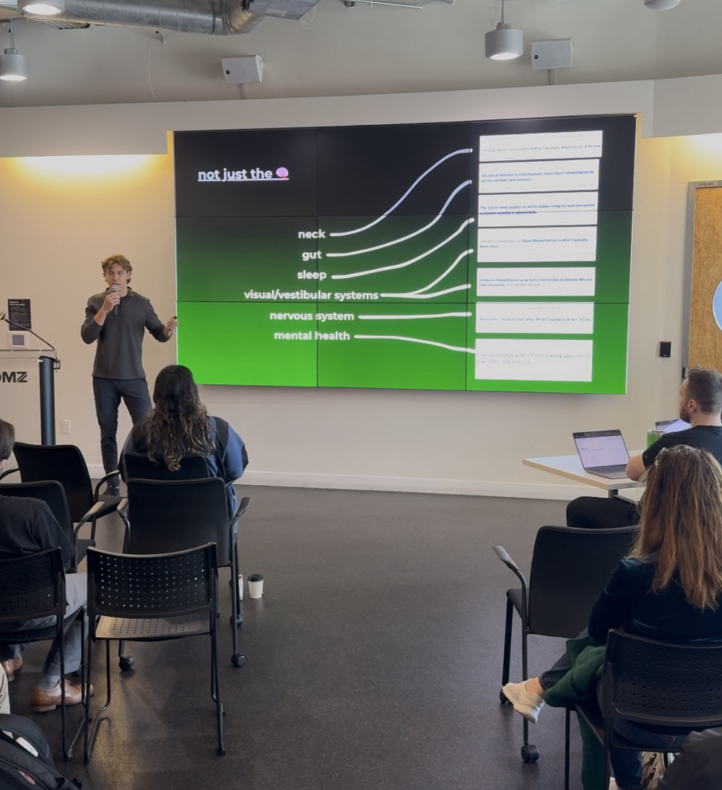

My Story
I created this because I struggled with persistent concussion symptoms for 10 months and found no helpful resources for a very long time.
I finally did what I should’ve from the very start… search it up online. After not long on reddit, I found others who had gone through the same ordeal of persistent concussion symptoms for months or even years.
Some had recovered and recommended some resources including the Complete Concussion Management YouTube channel which was very helpful. That’s where I started to understand what a concussion, why my symptoms where persisting for months, and how I could get better.
About 3-4 weeks later, after going deeper on the new concussion research and holistic recovery methods, I was finally back to my 100% healthy and resilient self. No more symptom flare-ups, no more hopeless suffering after 10 long months.
After I started my instagram account @optimilez to share this info to boxers/fighters like myself who I knew where struggling with similar issues. I found deep satisfaction in sharing publicly and helping many privately come to the same recovery I did.
I made this site to share what took me over a year to figure out — so others don't have suffer so unnecessarily.
Hopefully it helps some of ya’ll out ❤️
It gets better.
- Miles

My Story
August 2022 going into my last year of high school, I was lacking confidence and felt soft, so I started boxing.
I trained hard for months and got addicted to the progress I was making. It felt rly empowering knowing how to throw a punch, how to do damage, how to defend myself.
4 months in, I decided to compete. I started doing actual sparring, hard sparring, to prepare. I got my first concussion from a sparring session in April 2023.
A couple weeks later I got back to intense training and sparring even though I still had some lingering symptoms. DO NOT DO THIS.
Returning to intense training and sparring too soon after a concussion can come with very serious (even permanent) consequences on your brain.
Tho I was lucky, nothing too bad happened here and continued training hard for my upcoming fight in June 2023.
I won by unanimous decision. Even after breaking my thumb in the first round. This sidelined me for 6 weeks with a big cast on my right forearm. That first fight was so transformative for me, I was hungry to get back to competing.
Right after I came back from my thumb injury, I got another concussion from sparring. I was being reckless and cocky. I wasn’t paying attention to defence and was taking a lot of unnecessary shots to the head.
I thought it would go away in couple weeks like my last one. I ended up having persistent concussion symptoms for 10 months.
I had near-nonstop issues with fatigue, headaches, vision problems, balance and coordination issues, brain fog, and emotional distress.
I sought help from my doctor, two concussion specialists, and was sent to the ER in December 2023 when my symptoms flared up drastically.
All these docs told me the same thing: “Rest until you feel better.”
I diligently followed their advice, but it didn’t help. I was constantly getting symptoms from light head bumps, light exercise, screen time, bad sleeps, and more.
I had to drop classes and barely made it through my first year of university. I was socially isolated and unable to work out without symptoms flaring up. I felt lost, fragile, frustrated, and hopeless.
After the 20th symptom flareup from a light bump to the head playing basketball in May 2024, I got fed up and started doing my own research, and discovered what had been holding me back.
New research-backed methods can treat and prevent concussions and persistent symptoms much more effectively than the standard rest-until-you-feel-better protocol. But most healthcare professionals aren’t yet educated on these new methods.
After diving deep on these methods and implementing the necessary rehabilitation, lifestyle changes, and mindset shifts, I came to a full recovery after 10 months.
I’m now 100% healthy and back to full-intensity training and even sparring, but I don’t spar like the knucklehead I was once was.
It shouldn’t have been so hard to find the strategies that helped me heal and feel good again.
This knowledge needs to be accessible. Hopefully the info on this site can help. Feel free to reach out.
And remember it gets better. This might be hard to believe when feeling crap has become the new normal for you. It’s hard to see a way out the storm when you’re in thick of it. But you’ll find your way out. I did. You will too.
Some Videos I Made
I made these videos a while back in fall 2024 when I made a course to help boxers better-manage concussions. They cover some of the key topics.